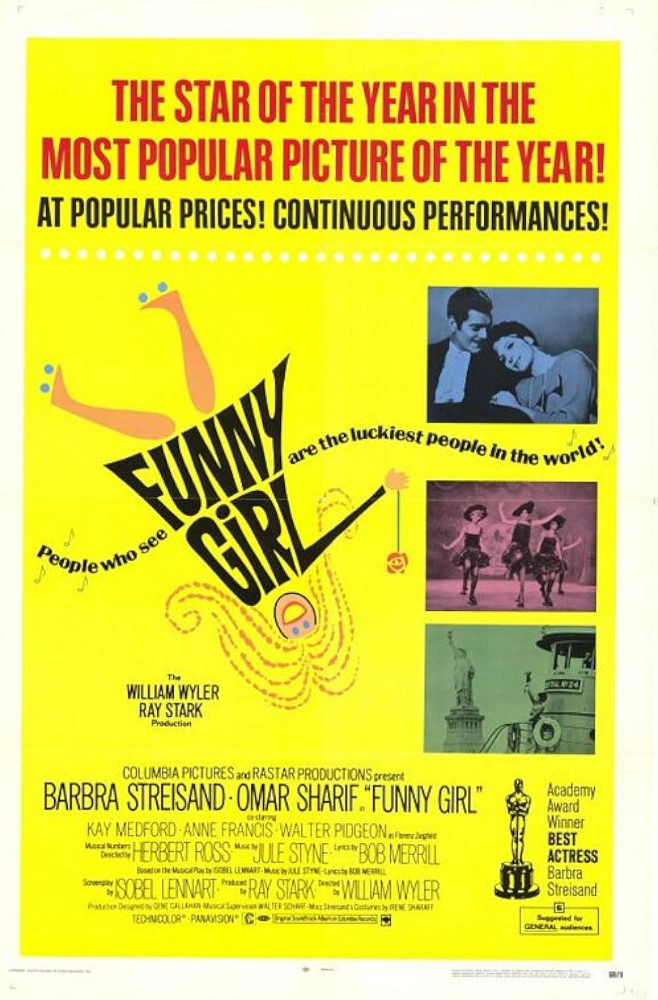

Funny Girl
41st Academy Awards
(Oscars 1969)
8 Nominations, 1 Award
| Nominations | ||
|---|---|---|
| Category | Nominees | Result |
| Best Picture | Ray Stark | Nominated |
| Actress | Barbra Streisand | Won |
| Actress in a Supporting Role | Kay Medford | Nominated |
| Cinematography | Harry Stradling | Nominated |
| Film Editing | Maury Winetrobe, Robert Swink, and William Sands | Nominated |
| Sound | Columbia Studio Sound Department | Nominated |
| Music (Score of a Musical Picture--original or adaptation) | Walter Scharf | Nominated |
| Music (Song--Original for the Picture) "Funny Girl" |
Bob Merrill and Jule Styne | Nominated |